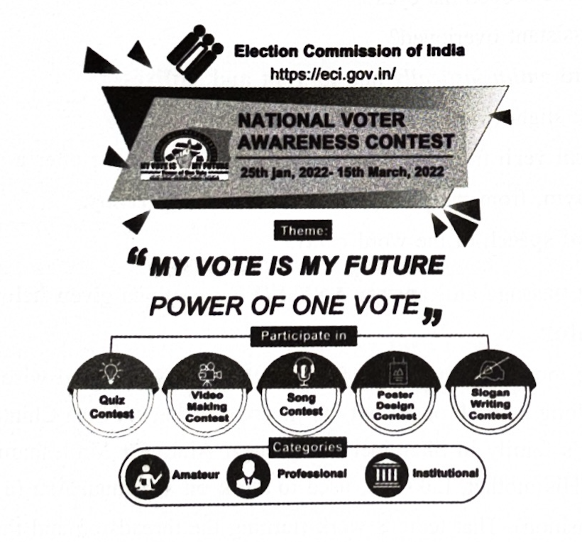

(Units 3, 7, 11, 13, 15–17 & 25)
Marks: 40
Time: 1 ½ Hrs
1. Answer ANY ONE of the following questions in about 100 words. (1 × 4 = 4)
a) Describe the deportment of Dr. Vasudevan as the Professor of TCE.
b) How did A P J Kalam encourage Dr. Vasudevan and what has been the outcome?
2. Answer ANY ONE of the following questions in about 100 words. (1 × 4 = 4)
a) What is the theme of the poem On the Grasshopper and Cricket?
b) Why does the poet believe that the poetry of earth is never dead?
3. Answer ANY ONE of the following questions in about 100 words. (1 × 4 = 4)
a) Sketch the character of Dr. Raman.
b) Describe Gopal’s health condition and his anxiety about the will.
4. Read the following passage and answer ANY FIVE questions given below: (5 × 1 = 5)
The lady felt giddy and sank down on the floor, unable to bear the strain. The nurse attended to her and led her out. At about eight in the evening the patient opened his eyes and stirred slightly in bed. The assistant was overjoyed. He exclaimed enthusiastically, “Sir, he will pull through.” The doctor looked at him coldly and whispered: “I would give anything to see him through but, the heart.”
i) Who does the phrase the lady refer to in the passage?
ii) Why did she sink down on the floor?
iii) When did the patient open his eyes?
iv) Why was the assistant overjoyed?
v) Analyse the word enthusiastically into its root and suffixes.
Here is a model: slight (root) + ly (suffix) = slightly.
vi) Write the phrasal verb from the passage that means: get better after a serious illness.
vii) Write the antonym, from the passage, of the word indifferently.
viii) Write the part of speech of the word giddy.
5. Read the following passage and answer ANY FIVE questions given below: (5 × 1 = 5)
Mother of Inventor
Necessity is the mother of invention. So goes the widely-accepted wise saying. Here, however, a mother’s toil for long hours brought out the inventor in Padma Shri Chintakindi Mallesham. Born into a poor weaver’s family in Sharajpet village near Alair, Dr. Mallesham dropped out of school after his 6th class. His mother, Lakshmi, used to work on a manual Asu (a pre-loom activity in the dye and weaving fashion). That tedious work (turning the threads around the Asu for 9000 times to get yarn ready for just one saree!) used to leave her shoulders and joints strained to extreme levels. Moved by his mother’s pain, Dr. Mallesham decided to find a way out. He moved heaven and earth for years. His determination was his sole resource. Challenges were many. Support from his wife, Swarna (literally ‘gold’!) and a few friends mattered a lot. Finally, in 1999, he made his dream come true. Mechanical Laxmi (his mother’s name) Asu saw the light of day. That filled many weaver homes with the light of relief from their toil. Accolades came his way. Governments, universities, NGOs honoured him. A biopic was made based on his achievements. Even Forbes listed him among the seven powerful rural entrepreneurs. Now he runs an Asu-making unit at Alair. He visits institutions inspiring the young with his simple, to-the-point and time-specific talks.
i) What brought out the inventor in Dr. Mallesham?
ii) Define how Asu works?
iii) Describe the conditions in which Dr. Mallesham struggled to make his dream machine.
iv) Does his invention help his mother alone? Support your answer with evidence from the passage.
v) Name any two honours Dr. Mallesham received.
vi) Find out the idiom used in the passage that means did everything one could possibly do in order to achieve something.
vii) Pick out the one-word substitute from the passage that means persons who start business especially when that involves taking financial risks.
viii) A portmanteau word is a word blending the sounds and combining the meaning of two words – Example: smoke + fog = smog. Now find out one such portmanteau word from the passage that blends biography + picture.
6. Study the following advertisement and answer ANY FOUR questions that follow. (4 × 1 = 4)

i) What is the advertisement about?
ii) What is the theme of NVAC?
iii) Name any two areas in which the contest takes place.
iv) Who has issued this advertisement?
v) How many categories of participants can contest the competition?
vi) Write the antonym, from the advertisement, of the word amateur.
vii) When is the contest scheduled?
viii) Pick the synonym of the word consciousness from the advertisement.
7. Study the table below and answer ANY FOUR questions given after it.
India’s Medal tally at Tokyo Olympics
(4 × 1 = 4)
i) What does the table show?
ii) Who won the gold medal for India?
iii) Who won a bronze medal in boxing?
iv) How many medals did India win at the Olympics?
v) Bhajrang Puniya won the bronze medal. Write true or false.
vi) Meerabhai Chanu won the silver in ________.
vii) India won 5 bronze medals at the Tokyo Olympics. Write true or false.
viii) Who won the bronze medal in badminton?
8. Write a letter to your uncle describing your feelings about monotonous academic work. (1 × 5 = 5)
OR
Write a letter of complaint to the Sub-Inspector of Police of your area about the theft of your mobile in your hostel.
9. Rewrite the following passage using FIVE of the punctuation marks wherever necessary. (5 × 1 = 5)
After a decade’s hard work and persistent efforts, his invention of a simple technology to use plastic waste to lay roads patented by TCE finally got a shot in the arm last month with the centre approving its wider application.